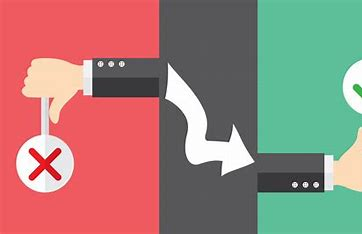

Capitolo 1
La scienza
La storia
Aspetti negativi e positivi
Come comportarsi in rete
La scienza
L'informatica è la scienza che si occupa del trattamento di dati fruibili nell'informazione mediante procedure automatizzate.
Studia i fondamenti teorici dell'informazione, la sua computazione a livello logico e le tecniche pratiche per la sua
implementazione e applicazione in sistemi elettronici automatizzati.
È connessa con la logica matematica, l'automatica, l'elettronica e l'elettromeccanica

La storia
La rivoluzione digitale è il passaggio dalla tecnologia meccanica ed elettronica analogica a quella elettronica digitale che,
iniziato nei paesi industrializzati del mondo durante i tardi Anni cinquanta,
è proseguito fino ai giorni nostri in varie fasi storiche, all'interno della cosiddetta terza e quarta rivoluzione industriale.
Si fa riferimento a questo periodo di cambiamento e di sviluppo tecnologico anche con l'espressione rivoluzione informatica,
per indicare gli ampi cambiamenti socio-economici apportati dalle Tecnologie dell'Informazione e della Comunicazione (TIC, o in inglese ICT).

Aspetti negativi e positivi
Tra le principali accuse rivolte a Internet c’è il fatto che la Rete sia impalpabile,
sfugga al controllo: un ragazzino potrebbe imbattersi in un sito diseducativo
e per questo trovarsi coinvolto in contenuti violenti con conseguenze assolutamente imprevedibili e ingestibili dai genitori.
Parlando di adolescenti, spesso viene mossa un’altra accusa alla Rete: provocare dipendenza,
diventare una mania o una fissazione che porta a confondere il piano della finzione o della vita virtuale con quello della vita reale.
D’altro canto i vantaggi della rete sono tantissimi: in primo luogo, il fatto che Internet sia stato capace di abbattere i confini, non solo geografici.
Tutte le informazioni, anche quelle più remote, sono diventate accessibili in tempo reale. Dal paese più piccolo d’Italia
puoi collegarti con la più grande biblioteca del mondo e sfogliare (virtualmente) libri che altrimenti non avresti mai potuto consultare.

Aspetti negativi e positivi
La netiquette è l'insieme di regole non scritte che regolano il comportamento delle persone online.
Rispettarla è fondamentale per mantenere un ambiente virtuale positivo e rispettoso.
Questa guida fornisce consigli utili su come interagire in modo corretto sui social media, forum e chat.
Ritorna al l'indice